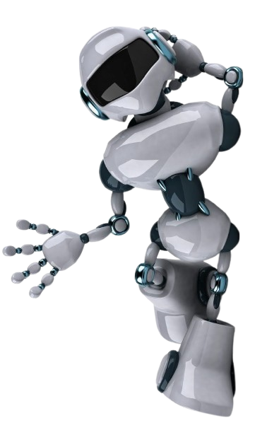
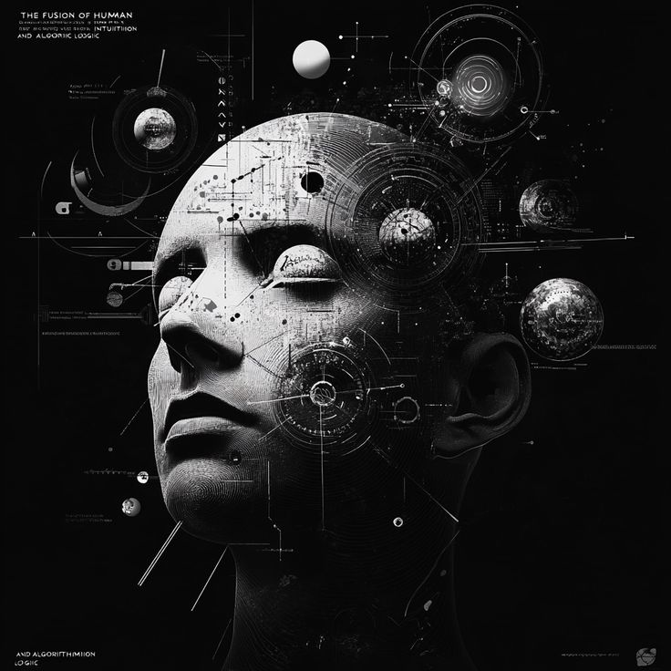

Комп'ютерний Зір. Майбутнє.
Комп’ютерний зір - це напрям у галузі штучного інтелекту, що займається розробкою математичних алгоритмів та програмних засобів для автоматизованого аналізу, обробки й розуміння візуальних даних.

Архітектура та вплив на світ
Основна мета цієї дисципліни полягає у відтворенні складних функцій людської зорової системи, що дозволяє обчислювальним машинам самостійно розпізнавати об'єкти, визначати їхні просторові координати та інтерпретувати динамічні сцени. У сучасних прикладних системах розв'язання цих завдань базується на архітектурах глибоких нейронних мереж, зокрема згорткових (CNN) та трансформаторних (Vision Transformers) моделях, які навчаються на величезних масивах маркованих зображень.
Завдяки високій точності розпізнавання, технології комп’ютерного зору стали фундаментальною основою для розвитку систем автономного водіння, автоматизованої медичної діагностики, інтелектуального відеоспостереження та робототехніки. Таким чином, дослідження у цій сфері безпосередньо трансформують взаємодію між машиною та фізичним світом, забезпечуючи перехід від простої фіксації пікселів до глибокого семантичного аналізу відеопотоку.
